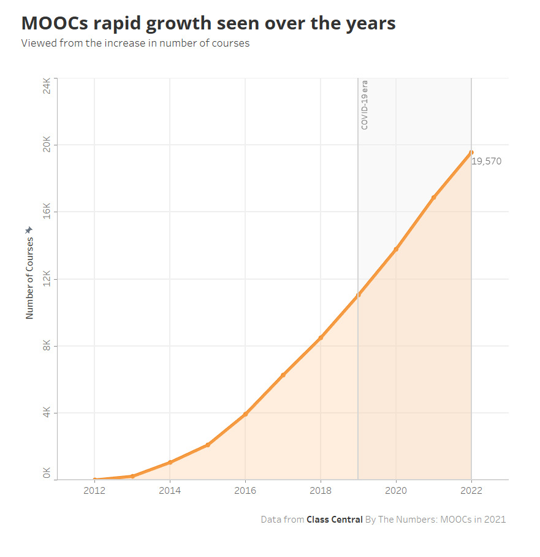
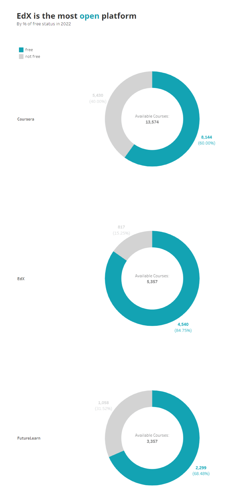
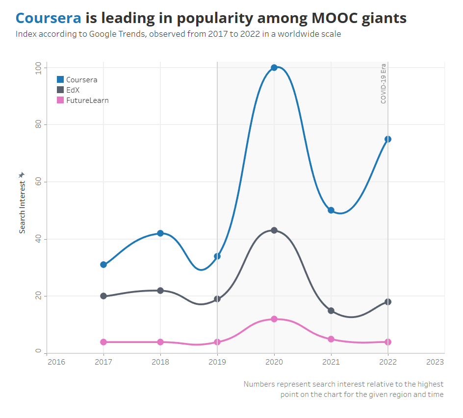
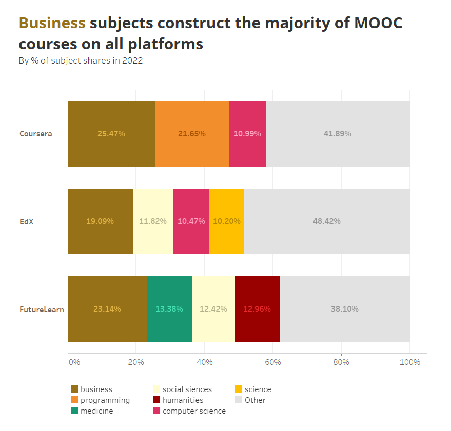
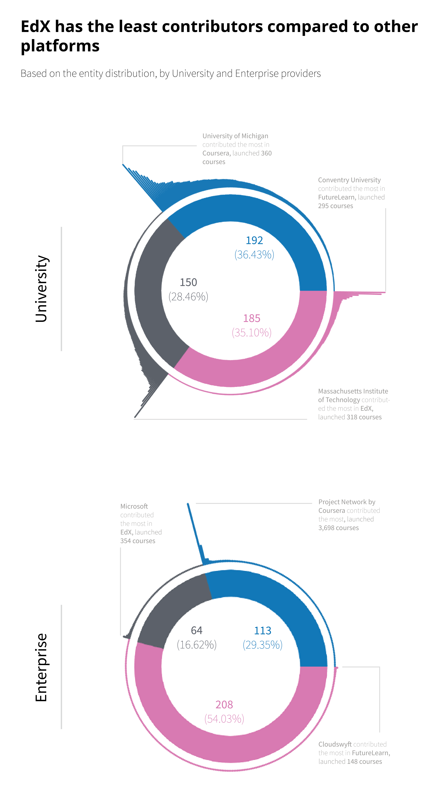
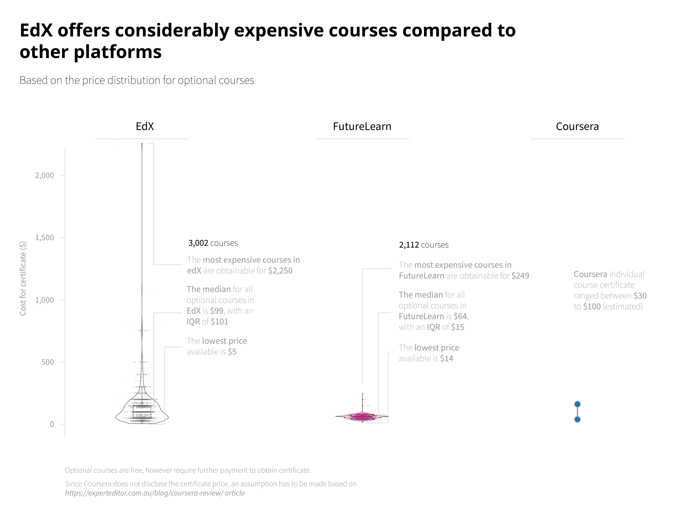
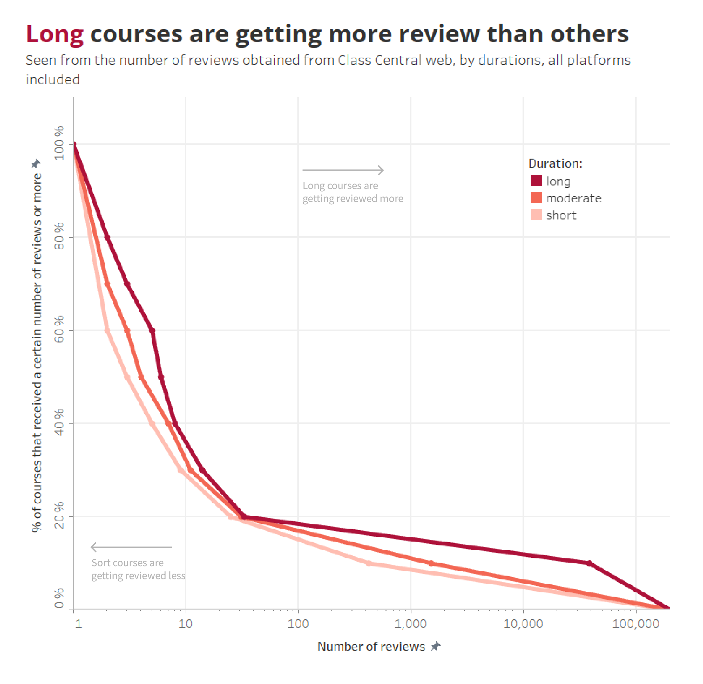
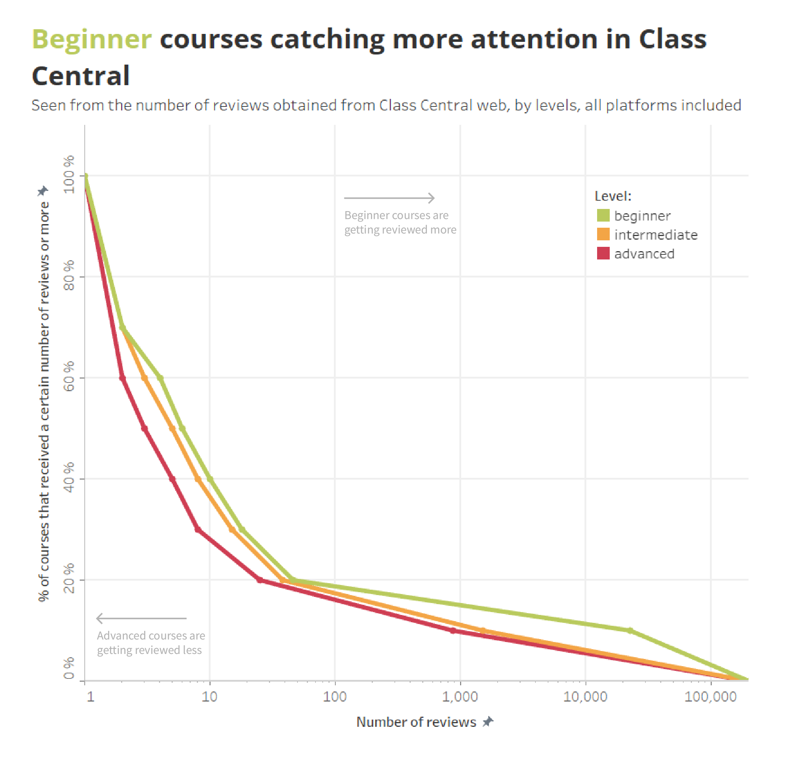
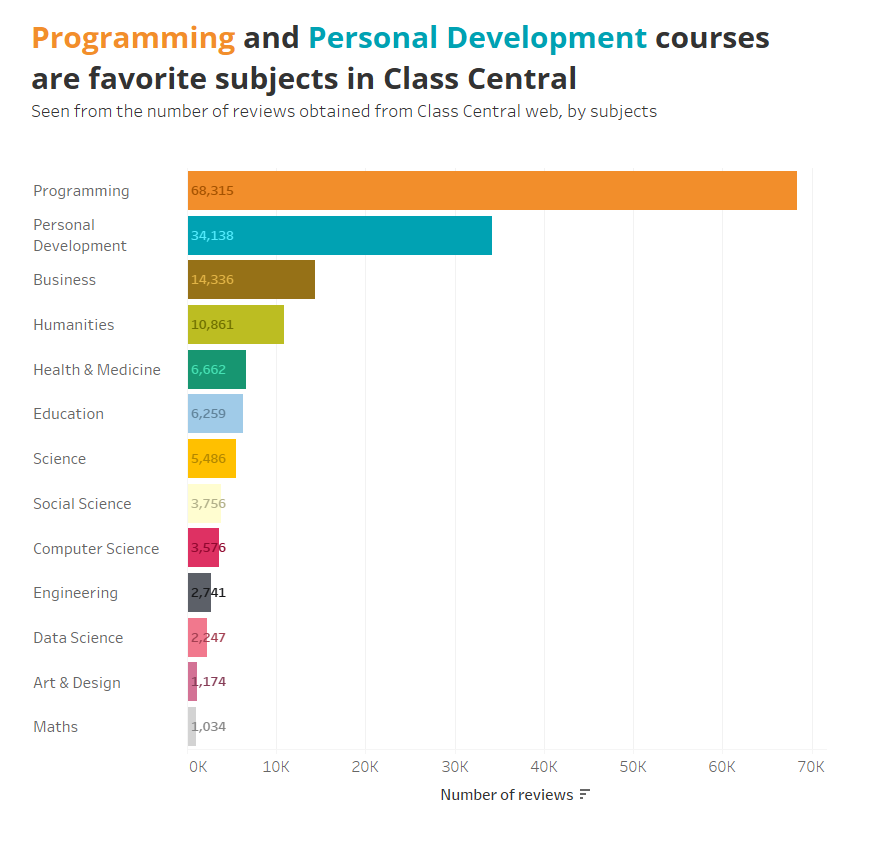

Among The Giants of MOOC Provider
Table of Content
Exploration Basis
The online education world has entered a new era. Ease of learning access, time flexibility, and interactivity are why people are starting to be attracted to online learning. We can also interact with people from other parts of the world throughout our studies. People are starting to realize that online certificates also have a weight that is no less useful than conventional diplomas, especially to legitimize additional capabilities.

EdX, Coursera, and FutureLearn are among the Massive Open Online Courses (MOOC) providers with abundant (and exclusive) courses. This article compares all of them from many perspectives.
Approach and Tools
Python’s Beautiful Soup is the main tool to extract the data from classcentral.com. The same data processing environment is also used to prepare the data for analysis.
Class Central would be the main data source for this article. Class Central is an awesome site that provides broad information on MOOCs around the world, including rating, popularity, and course-by-course details. I will also use Google Trends to support my findings. You can view my data here.
Summary of comprehension:
| Comprehension | Technique | Tool |
|---|---|---|
| Data mining | Extract | Python (Beautiful Soup) |
| Data preparation | Clean, Modify | Python (pandas) |
| Data manipulation & exploration | Joins, Ranking, Pivot Table, Statistical Measurement | Python (pandas, NumPy, SciPy) |
| Data visualization | - | Tableau, Python (matplotlib) |
| Reporting | Markdown language | Visual Studio Code |
Insights
Which platform is the most “open”?
MOOC itself stands for the word Open. From this definition, I want to know which platforms provide more open learning opportunities than others.

Of the three, EdX is the most accessible platform. 4,540 of their courses (84.75 %) could be accessed without a paywall. Does that make EdX the favorite of all?
Google Trends shows otherwise. From the search popularity, Coursera is far superior to others. There is a noticeable gap between the three that is shown in the graphic below.

As of November 2022, Coursera is ranked no. 1 in search interest metric, followed by EdX in second and FutureLearn in third.
From this point onwards, the question will focus on the differentiators of the three platforms.
Subject composition
Business subjects excluded, there are quite striking differences. Coursera is constructed on technology-related topics. Programming and CS contributed to a total of 32.64% of all the courses.
Meanwhile, EdX is more diverse in terms of subject coverage. For FutureLearn, they count on medicine and humanities courses.

Course provider exclusivity
EdX is the most exclusive in terms of contributor diversity, especially for enterprise providers. Only 64 unique course providers are accounted for; half the number of Coursera and one-third of FutureLearn. EdX is very strict about their partnership.

Which platform is the most affordable?
Courses affordability will be rated for open courses only, which means that the courses could be accessed freely, but it needs further payment to obtain the certificate.

From this point of view, Coursera’s certificate is cheaper compared to others. Unfortunately, this number only represents estimation since no open data are available (require specific steps to reveal the price of the individual course).
EdX is the most expensive platform, with a median price of US$99 and an IQR of US$101.
From the eyes of the people
In this section, an assessment will be carried out and will be pointed toward one metric: the number of reviewers in Class Central. This was done to identify tendencies across several variables.
Long courses are getting more review than others
It is shown that people are more in favor of long-duration courses. 20% of long-duration courses are getting reviewed 33 times or more.

This shows that people like the course to be thorough rather than introductory.
Beginner courses are getting more review than others
Beginner courses are reviewed more than other levels. 20% of beginner courses are getting reviewed 46 times or more.

This could indicate that people mainly join online courses to close their knowledge gap of a certain topic.
Programming and Personal Development courses are favorites
There is a noticable gap on the review number between programming subject and the rest.

It only makes sense that programming takes over subject popularity. According to Springboard, entry-level programmers have a range of salary between US$ 40,000 - US$ 87,000 and a median of US$ 60,000 per year. Meanwhile, senior programmers have an average base salary of US$ 91,116 per year.
Personal development courses are also popular in Class Central. This shows that people are aware of their personal growth, mostly for their career advancement.
Insight Summary
- EdX is the most open platform, yet its popularity is below Coursera. They are also relatively expensive compared to other platforms.
- Long-duration courses are getting more reviews. This shows that people like the course to be thorough rather than introductory.
- Beginner courses are reviewed more than other levels. This could indicate that people mainly join online courses to close their knowledge gap of a certain topic.
- Programming subject hold the most popular subject. This is in accordance with their entry-level salary which is quite high.
- Personal development subject is also popular in Class Central. This shows that people are aware of their personal growth, mostly for their career advancement.
Footnotes
-
All of the data processing behind this post can be found here.
-
I use Class Central website data for course-by-course detail and Google Trends to find the search interests of my observation.